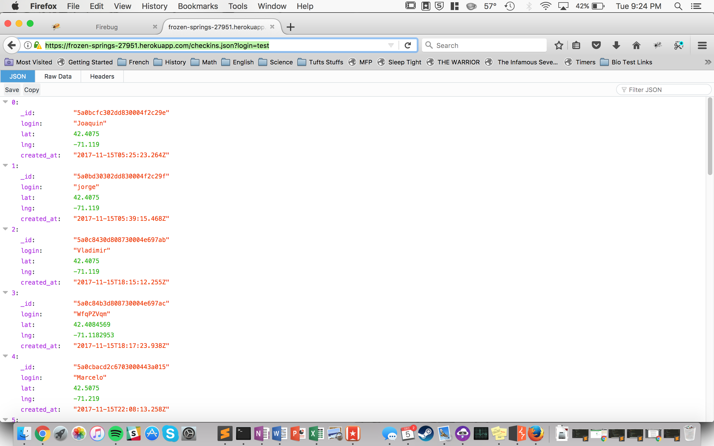
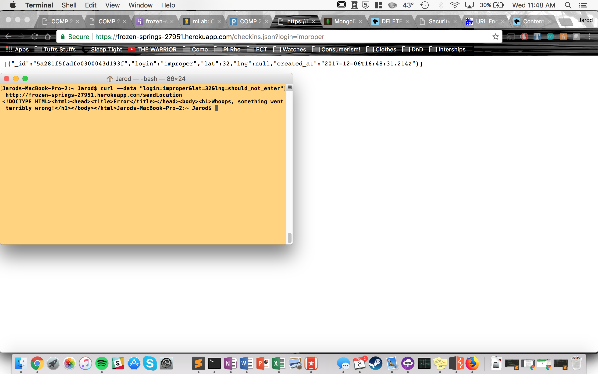

Introduction
As a part of the COMP20 course at Tufts University, I was assigned to test the server and client implementation of another student and examine their application for security and design flaws
Methodology
To search for vulnerabilities, I used curl and BurpSuite to experiment with how the implementation I was assigned would react to malicious POST requests and query strings
Abstract
Through the course of this testing, I found an XSS scripting vulnerability, a privacy issue that allows an attacker to view more information than they should be provided, and an issue with database entry that causes improper requests to be stored.
Issues
XSS Scripting Vulnerability
Issue
Making a POST request with any payload containing a pair of script tags causes that script to be run when the user visits the home page, as all ids are posted directly to the site as uncleaned strings
Location or page
The issue is caused by a POST request to the https://frozen-springs-27951.herokuapp.com/sendLocation route that contains a malicious script for the id field (i.e. with the command curl --data "login=_SCRIPT_HERE_&lat=0&lng=0" http://frozen-springs-27951.herokuapp.com/sendLocation)
Severity
High. Any attacker can inject any HTML script of any complexity that wil be rendered immediately in the users browser.
Description
I discocvered this issue after attempting a basic XSS injection, assuming that the login string would not be sanitized before being displayed.
Proof of vulnerability
Having performed an injection of a basic reroute script, the website http://frozen-springs-27951.herokuapp.com/ now directs the user to the Youtube video for "Never Gonna Give You Up" by Rick Astley.
Resolution
To prevent this issue, all logins should be sanitized to remove less than and greater than symbols to prevent any malicious scripts or attempted XSS attacks from being run.
MongoDB Query Privacy issue
Issue
Modifying the request sent by https://frozen-springs-27951.herokuapp.com/checkins.json can allow the attacker to view all entries in the people database.
Location or page
This vulnerability is found at https://frozen-springs-27951.herokuapp.com/checkins.json by using a proxy service to intercept the GET request and modify the query parameters.
Severity
Low. This vulnerability allows the attacker to view all checkin data, but this information is also already freely provided at the home page. As such, this is a clear vulnerability, but the attack itself does not reveal any information that is not already freely available.
Description
I found this issue after attempting the MongoDB Query Selector Injection attack that was linked from the COMP 20 Piazza site.
Proof of vulnerability
As this image shows, using the login "test" and modifying the query with BurpSuite returns logins for "Joaquin", "jorge", and others.

Resolution
To prevent this issue, the values passed by the query string should be cast to a string before their use in the mongodb find function call.
Invalid Request Database Entry
Issue
When making a POST request to the /sendLocation route, non-numerical values for latitude and longitude are properly rejected according to the response which sends, but upon closer inspection these entries are still logged into the database.
Location or page
This vulnerability occurs when the attacker submits a POST request to /sendLocation.
Severity
Medium. This vulnerability causes improperly formatted data to be entered into the table regardless of the validity of the data. While this does not present an immediate issue from a security standpoint as all improper values are still entered as "null", it could interfere with any attempts at data analysis down the line. If the developer assumed that all inputs would be numerical values, the series of null requests that are input to the database could drastically skew results.
Description
I found this issue after trying to perform a divide by zero in the post request to see if that would interfere with the functionality of the server. When the response contained the error message, I went to /checkins.json to validate that the result was not added, and saw that even though the server claimed to have rejected the entry it was still present.
Proof of vulnerability
This image shows my terminal window with the curl command used as the payload, the server response, and the entry in the database that results from that supposedly "failed" POST.

Resolution
To prevent this issue, the entry should only be added to the database after it has been converted to a float and verified to have contained a valid numerical value.
Conclusion
In the future, all inputs need to be sanitized and all entry values confirmed before entry into the database. Failing to do so can result in improperly formatted data or the injection of malicious javascript code that immediately renders in the users browser. Similarly, all search parameters into the database should be cast to strings in order to prevent unintended access to data by modifying the GET request using a proxy intercept.
References
Piazza post explaining the MongoDB query selector injection
OWASP Top Ten from 2013